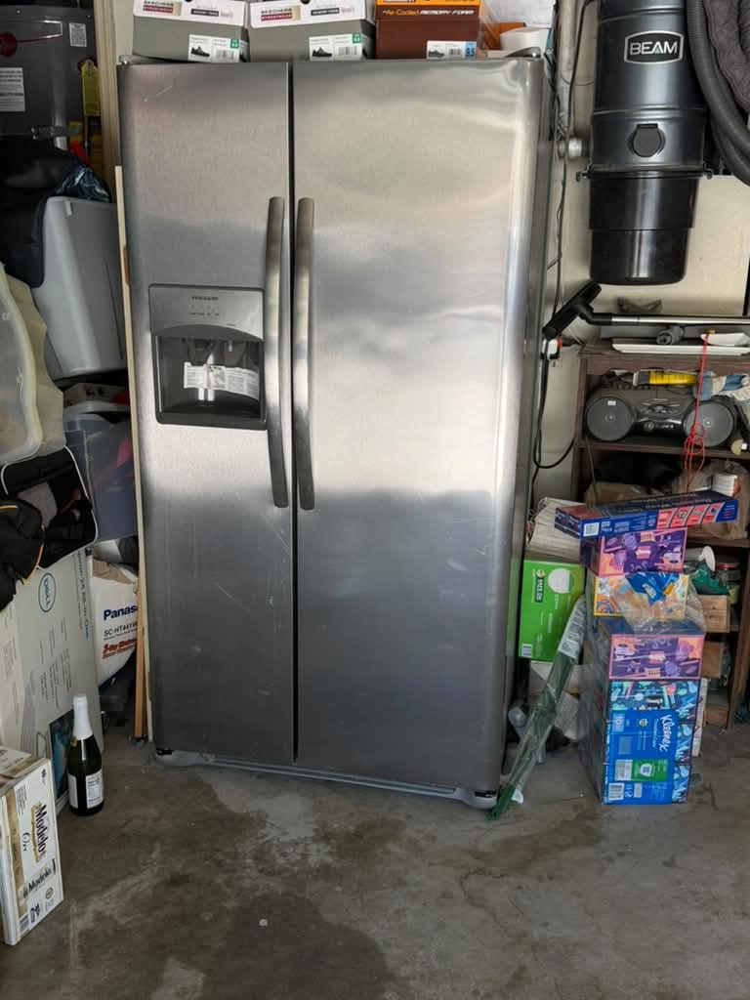
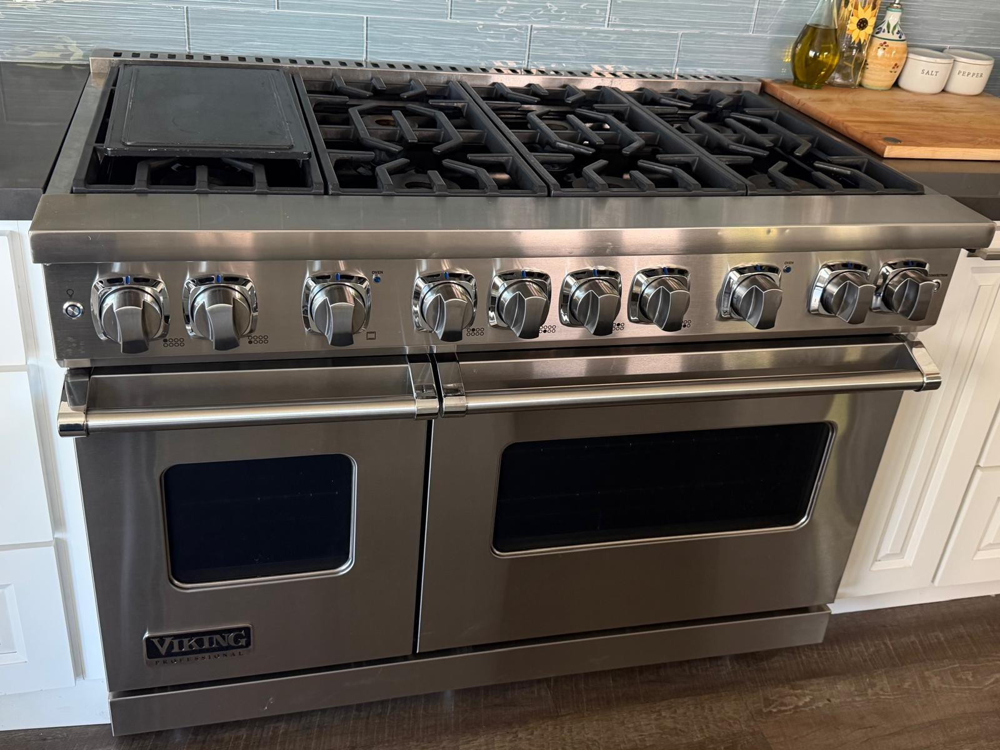
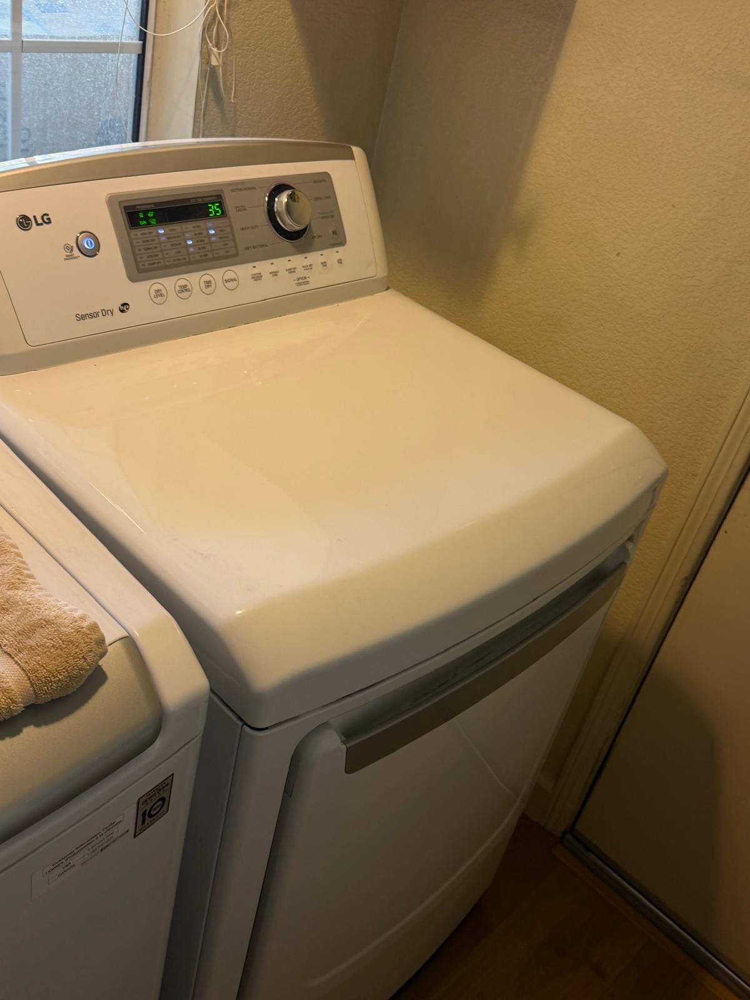

Appliance Repair in
Chino Hills, CA
Serving Chino Hills (ZIP 91709) and neighboring Chino (ZIP 91710), both in San Bernardino County, from our home base in Stanton, Orange County. Same-day when there is room in the day. $99 diagnostic, credited toward your repair. Licensed and insured.
Universal Appliances Repair Group Inc. repairs appliances in Chino Hills and Chino, California, two San Bernardino County cities (ZIPs 91709 and 91710), from a home base in Stanton, Orange County. We service refrigerators, freezers, washers, dryers, dishwashers, ovens, stoves, garbage disposals and wine coolers, including Frigidaire, Viking, LG, Whirlpool, GE, Samsung and Sub-Zero. Same-day visits are possible whenever the day still has room; otherwise the next opening is usually a day or two away. The diagnostic is a flat $99 and is credited toward the repair. Call (949) 629-5365 or book online.
Recent Repairs in Chino Hills and Chino
Three completed jobs from our photo gallery. Two were in Chino Hills and one was in Chino, and each card names its city.

Frigidaire Refrigerator Damper Control Replacement
Damper control replaced on this Frigidaire side-by-side refrigerator in Chino Hills after it stopped cooling.

Viking Oven No-Heat Repair
This Viking oven was repaired after a reported no-heat issue in Chino Hills.

LG Dryer No-Heat Repair
This LG dryer in Chino was not heating. Repair completed; the photo shows the dryer powered on beside its matching washer.
Chino Hills and Chino: San Bernardino County
A quick note on the map: Chino Hills and Chino are both in San Bernardino County, not Orange County and not Riverside County. Our home base is in Stanton, Orange County, and we serve these two cities as part of the same service area as our Orange County, Los Angeles County and Riverside County customers. One page covers both cities, because the booking, the fee and the scheduling are the same.
Local details are from the City of Chino Hills, the City of Chino, San Bernardino County, California State Parks, and the Planes of Fame and Yanks Air Museum websites, as read in October 2026.
Appliance Problems We Fix
The three repairs above were a refrigerator that stopped cooling, an oven with no heat and a dryer that was not heating. Each of those symptoms can come from more than one part, which is why the first visit is a diagnostic. Here are the problems we repair.
Brands We Service in Chino Hills and Chino
The gallery repairs above include a Frigidaire refrigerator, a Viking range and an LG dryer. Everyday household makes and high-end built-ins both get the same diagnostic and the same fee.
We service these brands without claiming factory authorization. If your appliance is still under a manufacturer warranty, check with the manufacturer first.
Services We Offer in Chino Hills and Chino
Pick the appliance that is giving you trouble. Each link opens our Orange County guide for it, with its brands, symptoms and repair steps.
How It Works
Four steps from your call to a working appliance.
What Our Customers Say
From our 144 verified 5-star Google reviews
"AG fixed our Frigidaire refrigerator. Refrigerator side not cooling"
"AG fixed my Samsung dryer. Good service!"
"Great service and very informative"
Chino Hills and Chino Repair Pricing
The service-call diagnostic in Chino Hills and Chino is a flat $99, the same fee as everywhere we work. If you go ahead with the repair, it is credited toward your repair, and you get a firm quote before any work starts.
FAQ: Chino Hills and Chino Appliance Repair
Need Appliance Repair in Chino Hills or Chino?
Chino Hills and Chino customers get the same terms as everyone else: a flat $99 diagnostic credited toward your repair, a firm quote before any work starts, and a 90-day warranty on every job.